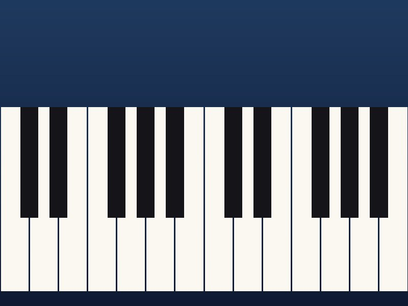
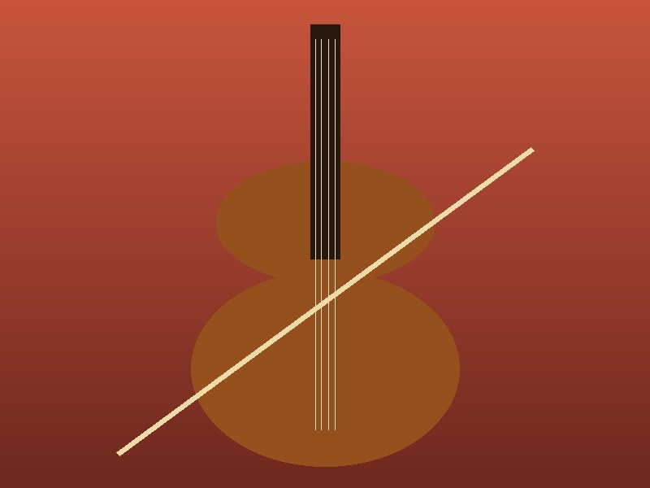
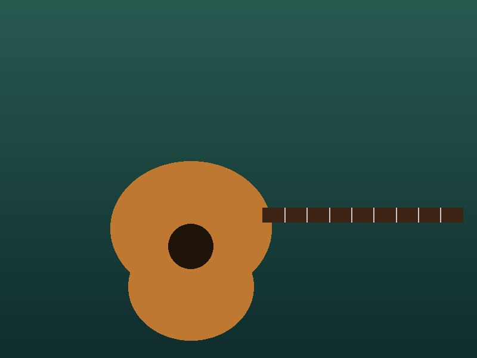

Դաշնամուր
Դասեր սկսնակների և առաջադեմների համար՝ դասական ու ժամանակակից երաժշտություն:

Դասեր երեխաների և մեծահասակների համար՝ փորձառու դասավանդողների հետ:
Գրանցվել դասիԴասեր սկսնակների և առաջադեմների համար՝ դասական ու ժամանակակից երաժշտություն:
Ձայնի դրվածք, աղեղի տեխնիկա և անսամբլային նվագ:
Շնչառություն, ինտոնացիա և բեմական վարպետություն:
Վոկալի դասընթացը ներառում է շնչառական վարժություններ, ձայնի տաքացում, ինտոնացիայի զարգացում, երգացանկի ընտրություն, միկրոֆոնի հետ աշխատանք և բեմական ելույթների պատրաստում: Սովորողները մասնակցում են տարեվերջյան համերգին և քաղաքային մրցույթներին: Դասերը անցկացվում են անհատական և խմբային ձևաչափով՝ հաշվի առնելով սովորողի տարիքն ու մակարդակը:
Հիմնական ձայնաշարեր, ձեռքերի դիրք և առաջին պարզ կատարումներ։
ԳրանցվելԱկորդներ, ռիթմ և հայկական ու համաշխարհային երգերի նվագակցություն։
ԳրանցվելՎոկալի դասընթացը ներառում է շնչառության մարզանք, ձայնի տեղադրում, դիկցիա, ինտոնացիա և բեմական վարքագիծ։ Աշակերտները աստիճանաբար անցնում են պարզ վարժանքներից դեպի ամբողջական երգերի կատարում։ Դասերը անցկացվում են անհատական և խմբային ձևաչափով։ Յուրաքանչյուր ամսվա վերջում կազմակերպվում է փոքր բաց համերգ, որտեղ սովորողները ներկայացնում են իրենց առաջընթացը ծնողների և ընկերների առջև։ Դասերի ընթացքում օգտագործվում են նաև ձայնագրություններ՝ սեփական կատարումը վերլսելու և վերլուծելու համար։
Դպրոցը գործում է երկուշաբթիից շաբաթ՝ -ից : Խմբերը փոքր են՝ առավելագույնը 8 սովորող:
| Դաս | Օր | Ժամ | Ամսավճար |
|---|---|---|---|
| Դաշնամուր | Երկուշաբթի | 16:00 | 18 000 ֏ |
| Ջութակ | Երեքշաբթի | 17:00 | 20 000 ֏ |
| Վոկալ | Չորեքշաբթի | 18:00 | 15 000 ֏ |
| Կիթառ | Հինգշաբթի | 16:30 | 16 000 ֏ |


